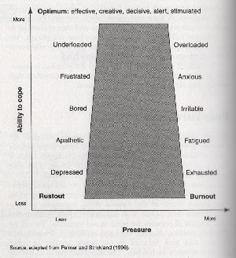

What is Genius Hour?
Genius Hour is a research project where the student chooses the topic and direction they would like to take their learning. The students are challenged to learn more about something that interests them and spend several weeks researching their topic. The student then decides on the product they will share that will represent what they learned and why it is important. It gives students an opportunity to enjoy learning and express their creativity.
“Awakening the Genius in You Primary Classroom: Genius Hour.” The Teacher Bag, 18 July 2017, theteacherbag.com/2017/05/20/awakening-the-genius-in-you-primary-classroom-genius-hour/.
My Genius Hour...
My class started Genius Hour by watching videos and learning about the purpose of Genius Hour. We then filled out a Word Document that contained three different topics, sources, and driving questions we could use. My three optional topics were stress as a student, the physics of ice skating, and how temperature affects baked goods. I have been ice skating since I was a toddler and still ice skate today, so that topic combined my favorite school subject (Science) and one of my passions. I have always wondered why there are specific temperatures you bake items at and what the Science behind this is, as I bake when I get the chance. Stress is often a factor in everyone’s lives, including mine, and I wanted to know how stress directly and indirectly affected my life, how stress is best coped with, and how this information can help me as I transition in to high school.
When we finished this document, we discussed with our teacher why we chose each topic and which one would be best for Genius Hour. We considered the amount of information that could be found on each topic, which topic it would be most beneficial to be knowledgeable in, and which one we were most interested in. My teacher and I agreed that the topic that was the most proficient in all of those categories was stress as a student. I then used the Tubric (a model that shows options and suggestions for the format of a Driving Question) to create a Driving Question that I would answer at the end of the project. I revised my Driving Question multiple times to make it broader and to fit the proper Driving Question format. My final Driving Question is "How can we as teens cope with stress?", I also came up with some Sub-Driving Questions to help guide my research; these include "What is stress?", "What are symptoms of stress?", "What are coping mechanisms (good and bad)?", and "What coping mechanisms do you use in specific situations?". Now that I knew what I was going to research, I had to decide how I was going to organize my research. I decided that I would have a piece of notebook paper that would be dedicated to the Driving Question or each individual Sub-Driving Question. I would then put all the research I found on that topic on the corresponding paper. By the end of the research, I had answered each the Driving Question and each Sub-Driving Question with all of my compiled information.
What I Learned From My Research
- I have learned that short-term stress is a natural response to dealing with threatening situations, but long-term stress can lead to physical and mental health conditions.
- I have learned the cause and effects of stress. External pressure leads to the body perceiving it as stressful, this leads to the symptoms of stress (including mental, behavioral, and physical), and then you reappraise the situation and either do not feel the need to be stressed anymore or your stress response fail to solve the issue, failing to reappraise the situation can lead to physical and/or mental illness.
- I have learned that stress was meant to prepare the body for fighting or running away when we were in danger. This was needed back when we were the prey or predator as cave men. Today, we often do not need to fight or run away when we are stressed, for instance this reaction would not be helpful during a presentation.
- I have learned that coping mechanisms are ways to manage external or internal stress.
- I have learned that some effective coping mechanisms include exercising, reading a book, and meditating.
- I have learned that if you procrastinate when you are stressed then you can cope by focusing on changing behavioral intentions and use time management techniques (creating a priority list), if you have inflexibly high expectations and stress yourself out because of this; you can work on modifying your attitude and changing your mindset, or if you get physically tense when you are stressed then you can use relaxation techniques.
- I have learned how to use stress to my advantage, what level of stress is the most productive, and the "stages" of stress. Here is a model of all of this information:

Palmer, Stephen, and Cary L. Cooper. "How to deal with stress". Kogan Page Limited, 2013.
- I have learned that "stress occurs when pressure exceeds your perceived ability to cope." (this quote can be found in the book "How to deal with stress" along with the model)
- I have learned that when you are at your personal stress optimum, it can push you to do well in school and improve your athletic performance.
- I have learned the symptoms of stress and how it affects you mentally, physically, and behaviorally;
| Mental | Behavioral | Physical |
|---|---|---|
| Anger | Passive Behavior | Dry Mouth |
| Anxiety/Apprehension/Fear | Aggressive Behavior | Clammy Hands |
| Depression/Self Doubt | Irritability/Snappiness | Frequent Sickness |
| Shame/Embarrassment | Procrastination | Breathlessness |
| Guilt | Increased Alcohol/Caffeine Consumption | Tightness/Pain in Chest |
| Jealousy | Comfort Eating | Fainting |
| Mood Swings | Disturbed Sleeping Patterns | Migraines/Tension Headaches |
| Reduced Self-Esteem/Self-Worth | Withdrawal/Sulking | Vague Aches |
| Helplessness | Compulsive/Impulsive Behaviors | Pain in Back |
| Suicidal Ideas | Poor Time Management | Indigestion |
| Paranoia | Reduced Performance | Diarrhea |
| Unable to Concentrate | Increased Absence | Irritable Bowel Syndrome |
| Negative Images/Thoughts | Eating/Talking/Walking Fast | Constipation |
| Increase in Daydreaming | Increased Accident-Proneness | Skin Complaints/Allergies |
| Poor Self-Image | Nervous Tics | Asthma |
| Nightmares | Clenched Fists | Rapid Weight Change |
How can I use the knowledge I have gained?
I can use the knowledge I have gained from my research outside of Genius Hour in school, when I have a job, and during my everyday life. During school, there are many quizzes and tests, and not becoming overly stressed about them using coping mechanisms can help my performance on the test or quiz. We also give presentations, and knowing how to handle the nerves and stress leading up to and during the presentation can help me to present. During a job, there will be deadlines, and using my knowledge of stress will keep me from procrastinating. Instead, I will be able to face the challenge head so I am productive. Everyday people experience stress and learning how to use this to your advantage is an important step especially as we gain responsibilities. Because I understand stress and how effects the body and mind, I will be able to use stress to help me perform under pressure better.
My Product
With all the research that I had collected, I needed to find a way to apply it to the real world in a way that teaches others what I have learned. I decided the best way to meet this goal was through an app. The app would include how to handle different stressful situations in a way that the coping mechanisms with not interfere/prevent you from succeeding. The app would also explain the chemicals that the brain releases when stressed, how these affect your body short-term and how these affect your body long-term. I would include the positives and negatives of stress and how to use stress to your advantage. Finally, I would include a page about how we benefited from stress when we were predators (cave men) and how this became the "fight or flight" reaction. The app would be called Stress Management, and the slogan for the app would be "Minimizing Your Stress". The icon/app used on mobile devices would look like this:
How can we as teens cope with stress?
To summarize, we as teens can cope with stress by changing our mindset and interpretation of what we can or cannot do. Negative thoughts can make a situation more stressful than it already was and if you believe you do not have the ability to meet a demand then you will become stressed. Properly coping with stress and not letting it get out of hand can prevent many long-term and short-term issues. We can, especially at DRSS, recognize that not doing well on a quiz in 8th grade may not affect whether or not you get a job after collage, and realize that some things are not important enough to be stressed about.
Citations
- 011-2018, (c) Copyright skillsyouneed.com. “Dealing with Stress - Ten Tips.” SkillsYouNeed, www.skillsyouneed.com/ps/stress-tips.html.
- Palmer, Stephen, and Cary L. Cooper. How to deal with stress. Kogan Page Limited, 2013.
- “Stress and Coping Mechanisms - How the body responds to Stressors.” Explorable - Think Outside The Box - Research, Experiments, Psychology, Self-Help, explorable.com/stress-and-coping-mechanisms.
Outside Links
The Dayton Regional STEM School (Click Here)